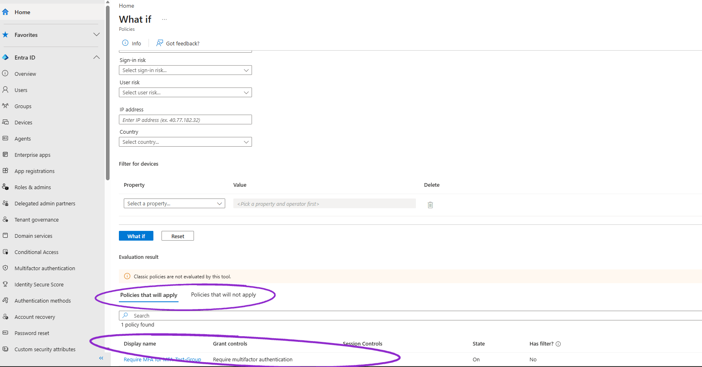

Cloud identitySep 2026
Entra IAM Lab

Problem
A user needs MFA enforced, app access through SSO, and a clean offboard when they leave, all in a real Microsoft Entra tenant.
Stack
- Microsoft Entra ID (P2 trial)
- Conditional Access
- SAML (Entra SAML Toolkit)
- OIDC (jwt.ms)
What's proven
- Users, a security group (MFA-Test-Group) and P2 licensing set up
- Conditional Access policy requiring MFA for the group, State On, confirmed with What If
- Leaver disabled, sessions revoked, P2 license removed
- SAML SSO into the Toolkit as testuser; OIDC app with assignment required and an ID token on jwt.ms